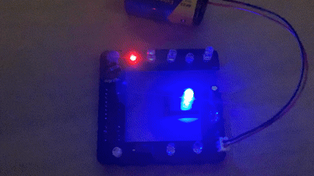

Each project has images you can view and plenty of writing explaining what it is, how I built it and what I learnt from the process. Feel free to use the random button so view a random project and also view my source code on GitHub.
Terminator Eye System

This was a Terminator eye system I designed and built for a client. It is built around a raspberry pi pico and is designed to recreate the iconic fade-in, blink and fade-out effect of the real terminator from the movies. My system uses two 3mm red LEDs driven through PWM to create smooth brightness transitions, timed blinks and a clean power-down sequence.
I sourced the parts online, soldered all the connections and programmed the firmware in MicroPython. The code runs the entire animation sequence once powered, which includes a gradual fade-on, multiple blinks, brief blackouts and finally a realistic "damaged" power-down once the SPST power switch is flicked.
To manage power in the system, a 1N4148 diode feeds 6V from an AA Battery pack into the pico's VSYS while blocking reverse current. A 0.5F 5.5V supercapacitor keeps the pico alive for a short amount of time after the switch is toggled off. This allows the microcontroller the run the full fade-out animation instead of just suddenly losing power and fully cutting out.
A 100kΩ pull-down resistor ensures the pico constantly monitors the rocker switch signal from GP16 so the power-down sequence can be ran instantly after the switch is flicked. All wiring was soldered with either classic jumper wires or 22AWG silicone-insulated cable so that the components could be moved around freely even after being soldered.
After the first 45 seconds of animation, if the power-switch is still activated, the code loops back to straight after the fade-on so the terminator appears to stay alive infinitely until power-down.
Gethin Hackpad v1

This was actually my first electronics project than I did with funding from HackClub. I learned about microcontrollers like the XIAO RP2040 which I used for this, as well as how key switches work in terms of wiring and on PCBs. I learned how to use the KiCad software to first import schematics for each component, route copper wiring, assign footprints and finally layout them out on a PCB that I later added silkscreen (printed text) onto. I ran both the ERC & DRC automatic checkers and fixed multiple issues before exporting the gerber files and sending them off to JLCPCB to get them manufactured and shipped to me from China. I designed a case for my Hackpad using the Fusion360 CAD software then got it 3D printed, before learning how to hand solder every electrical connection on the PCB. This project was very fun, I feel I learnt a lot about many different processes and this served as my entrance into the world of electronics and hardware engineering.
Gethin-75 Keyboard

Inspired by many other very cool mechanical keyboards and acting as a step-up from my Hackpad project, I decided to design and build my own custom 75% keyboard. I made this project to build on my understanding of the fundamentals of macro-board fabrication, to improve my PCB design skills by learning many new methods, such as switch matrixes as using KMK firmware, and to become more familiar with modelling parts in CAD for real-use cases such as 3D printing.
To design my PCB, I first used an external site (www.keyboard-layout-editor.com) to choose my layout and to export an outline for where the key switches needed to be placed in KiCad. I then imported this .dxf file into the PCB editor where I then placed many schematics for my switches, raspberry pi pico and left gaps for plate-mounted stabilisers.
I then imported the same outline into CAD where I extruded the plate up 5mm and reshaped the outlines slightly to serve as my keyboard plate in which the key switches were pushed in from above, through the PCB then soldered below. I also designed my keyboard case here and 3D printed it - this took many iterations and prototypes before ending up with my finished keyboard.
I routed the components in KiCad, and also exported a .step file which I imported into Fusion360 to check that it actually fit properly in the keyboard case. I fixed a few wiring issues, ran the built-in ERC & DRC and sent the gerbers off for fabrication.
Once the PCB and components arrived, I hand-soldered each and every diode, keyswitch and the pico onto the PCB and manually tested each key with a test code I made in CircuitPython. After a lot of trial and error, I managed to get every key switch working and flashed the microcontroller with my KMK python firmware and programmed each macro key to do specific functions, such as play/pause, next song, volume up/down and open task manager. I could definitely improve if I was to make another similar project, but overall this project went pretty well.
GG Battle Robot

This project served as more of a design project in which I used it to learn a lot about electronics and how robots and work, and not so much about the end product. This robot design was inspired with inspiration from Thor in Robot Wars with the axe weapon idea and Apollo for the general shape and aesthetics. This robot design uses 4x gear TT motors that are driven by 2 L298N motor drivers, controlled by a raspberry pi pico. The weapon is a 3D printed axe weapon driven by a SG90 servo motor.
Originally, the robot was controlled through a PCB that incorporated 433 MHz transmittion and recieving but after I learnt that it was too noisy and not reliable enough, I switched the design to use upgraded Raspberry Pi Pico 2Ws and wrote code that used their built-in local WiFi access point abilities to designate the robot as a host and allow the remote to automatically connect to the robot and send commands using a joystick module.
The original design also included a 1.8" SPI LCD screen to display useful data, a set of SK6812 MINI-E RGBs and a 8Ω 2W speaker driven by a PAM8302 amplifier board to play sound effects and/or music.
The original robot power involved a 4V battery pack, a 5V MT3608 boost converter and a 5V DC-DC buck converter but I later simplified this to use just a 6V battery pack for the remote and a replacable 9V alkaline battery for the robot. This meant that the whole power system was simpler and easier to approach as well as more lightweight so the robot could be controleld far easier. The chassis was 3D printed in Matte-PLA and the custom CircuitPython code was flashed onto the robot and remote.
I decided to use tank drive with the motors which meant that I could steer the robot by slowing down the 2 motors on the side I want the robot to turn and by speeding up the other 2 motors via commands sent by the remote pico. This also meant that it could spin in place by driving the 2 sets of motors in opposite directions.
The original PCB remote wasn't actually used in the final design but used replacable female header sockets for the RF transmitter, 5V boost converter and joystick module so they could be easily push-fitted in and replaced if needed. The design used THT soldered pico pads for the MCU, SMD-style surface mount pads for the button switches used for sending custom commands to the robot such as to raise/lower the axe weapon and to change the LEDs and LCD display, and exposed copper pads for the battery+ and battery- connections.
Overall, despite the final result not being perfectly as I originally imagined, I learnt a lot from this project and feel it really benefitted my understanding of electronics and especially how power systems work in the real world.
IC 555 Blinky

A classic circuit, but a useful one: this 555 timer build was a focused exercise in analog fundamentals. I tested different resistor and capacitor values to observe how timing changed, then documented behaviour and component tolerances across multiple iterations. It’s a simple project on the surface, but it reinforced good habits in breadboarding, measurement, and debugging that carried over into larger electronics work.
Ghost One

Ghost One was built as a stealthy, minimal-profile concept with emphasis on clean cable routing and modular internals. The aim was to make something that looked simple externally but was easy to open, modify, and maintain. I explored several internal layouts before landing on this architecture, and the final version struck a good balance between aesthetics, accessibility, and thermal performance.
A1 Mini Camera System

This mini camera system was an exercise in shrinking a complete imaging setup into a practical portable form factor. I worked on housing design, lens positioning, and mounting to keep the footage stable while preserving image quality. A lot of effort went into power management and recording workflow so it could be used quickly in real scenarios without a long setup process.
Project Eight

This section is currently a placeholder for the next major build. I use it to plan concept sketches, define constraints, and list milestones before fabrication starts. The goal is to keep each project documented from idea to final iteration, including what failed, what changed, and what I’d do differently in a second version.